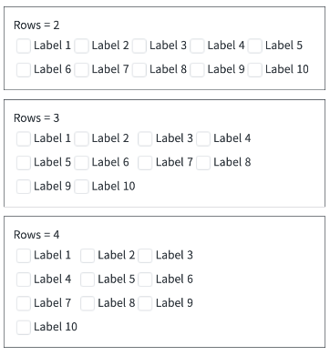
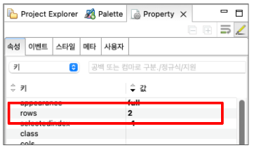
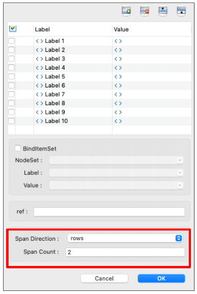

[Checkbox]선택된 항목 행(Row)의 수 조정하기
1개요
CheckBox의 선택 항목 행(row) 수를 조절하는 예제입니다. CheckBox의 rows 옵션을 이용해서 항목이 나열되는 행(row) 수를 조절할 수 있습니다.
2구현된 기능
선택 항목의 배치 행(row)의 수 설정하기
3예제 테스트 방법
3.1Rows 값에 따른 배치
- STEP1. Rows 값에 따라 배치된 형태를 확인합니다.
그림 1.브라우저(Chrome) 실행 예시

4구현 예시
4.1Property에서 설정하기
Checkbox의 Rows 속성을 설정할 행(row)의 수를 입력합니다.
[필수] row="행의 수" //[default: 0]
그림 2.웹스퀘어5 SP5 스튜디오의 Property View(속성창) 예시

4.2CheckBox 설정
Checkbox를 더블클릭해서 "CheckBox 설정"에서 값을 입력합니다.
[필수] Span Direction="정렬할 기준" //[default: none] row, col
[필수] Span Count="한 행 혹은 열의 수" //[default: 0]
그림 3.웹스퀘어5 SP5 스튜디오의 CheckBox 설정 창 예시

5주요 API
rows
6참고 문서
[웹스퀘어5 SP5 개발 가이드] CheckBox
링크 : https://docs1.inswave.com/sp5_user_guide/8df43d1f59fab704#27cc3703f47a5f30
7참고 동영상
CheckBox 가이드
링크 : https://youtu.be/oWlUmnfkBeA?si=sh8Dvgz3oBh4LgbU